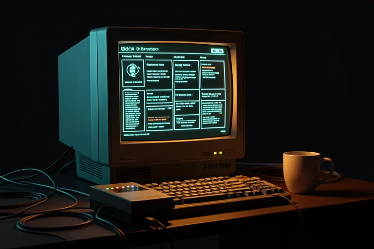

Nos anos 90, você precisou aprender computador. Nos anos 2000, precisou aprender internet. Agora, precisa aprender agentes de IA. Você já atravessou duas viradas. Esta é a terceira — e desta vez, sua experiência é a vantagem.
Você não vai aprender IA.
Você vai montar seu ambiente de trabalho com agentes.

Se você já testou o ChatGPT e sentiu que "não mudou nada", o problema não foi a IA — foi o uso de perguntinha. Esta formação não ensina a conversar com IA. Ensina a montar funcionários digitais que executam tarefas suas, do seu jeito, todos os dias.
Todos aprendem a mesma base — prompts, agentes, bases de conhecimento, Claude Code, APIs, automações. Mas cada um aplica nos projetos do próprio trabalho. Escolha onde você se reconhece:
Você passa o dia executando processos, e-mails e planilhas?
Entregue em 2 horas o que hoje leva o dia — sem virar programador.
Ver meu caminho → CAMINHO 02Você é dono do negócio e faz de tudo um pouco?
Uma equipe digital de vendas, conteúdo e atendimento — que custa menos que um estagiário.
Ver meu caminho → CAMINHO 03Você vive da sua expertise — consultório, escritório, consultoria?
Sua experiência de 20 anos operando 24h: pareceres, relatórios e triagem com a sua assinatura.
Ver meu caminho → CAMINHO 04Você responde por uma equipe e por resultados?
Chegue em toda reunião com análise pronta — e lidere com dados, não com achismo.
Ver meu caminho →Nenhum módulo termina em "entendi". Todo módulo termina em algo SEU, montado e rodando. E a parte técnica só chega depois de você acumular quatro vitórias — no seu ritmo, com rota alternativa em cada passo.
O que é um agente (sem jargão), e o que no SEU trabalho pode virar um.
Prompt não é frase bonita — é ordem de serviço com 8 blocos.
Do prompt ao funcionário digital permanente, testado com caso real.
Sua experiência organizada em arquivos de texto simples — o combustível dos agentes. (É um fichário, não é código.)
A tela preta sem medo: 6 comandos bastam — e antes do primeiro, você aprende o que fazer quando der erro.
A IA constrói sob a sua direção: você tem a planta, dá a ordem, confere a parede.
API, webhook e MCP em linguagem de gente (tomadas, campainhas e adaptadores) — e o custo de cada coisa ANTES de usar.
A montagem final: tudo que você construiu nos módulos anteriores ganha uma sede — com regras, memória e um ritual de 20 min por semana.
Nada de "imagine uma empresa fictícia". Todos os projetos usam o seu material, os seus casos, os seus clientes — e ficam com você.
Administrativo, financeiro, atendimento, suporte, RH, comercial interno, assistentes e analistas. Nos anos 90, quem sabia Excel virou referência do setor. Agora, quem opera agentes vai ser a pessoa que o setor não consegue perder.
Empreendedores, pequenos empresários, MEIs, prestadores de serviço, donos de negócio e infoprodutores. Seu concorrente já tem um funcionário que trabalha de madrugada: responde cliente, escreve post, monta proposta. A pergunta é se o seu negócio chega antes ou depois dele.
Médicos, advogados, arquitetos, consultores, engenheiros, professores, contadores e terapeutas. Você levou 20 anos para saber o que sabe. A IA não substitui isso — multiplica. Um agente treinado nos SEUS modelos prepara a minuta às 6 da manhã; você revisa, corrige e assina. A responsabilidade continua sua. O tempo também — só que de volta. Com um cuidado que é regra aqui: o que é sigiloso nunca entra na IA sem proteção — isso é conteúdo do curso, não letra miúda.
Gestores, coordenadores, diretores, empresários com equipe e consultores de gestão. Liderar é decidir — e você decide melhor quando a análise chega pronta, o status é de hoje e a reunião começa com as perguntas certas. Os agentes preparam. Você decide. Sua reunião de segunda pronta na sua mesa no domingo à noite.
Não acredite na página. Faça o teste: monte seu primeiro agente agora, de graça, com um problema real do seu trabalho. Se em 15 minutos você não sentir a diferença, esta formação não é pra você — e está tudo bem.
Escolha seu caminho na página do teste e receba o prompt-agente do seu perfil — pronto, testado, em português.
Preencha 3 lacunas com um caso real seu e cole no ChatGPT ou Claude que você já usa. Nada pra instalar, nada pra pagar.
Veja funcionando. Sua semana organizada, seu diagnóstico, sua triagem ou seu briefing de reunião — em minutos, no seu padrão.
Agora são os agentes. A diferença é que desta vez você não começa do zero: você tem experiência, profissão e problemas reais. A formação transforma isso em agentes, processos e sistemas funcionando na prática.
Começar pela prova dos 15 minutos Grátis. Sem cartão. Com um problema real do seu trabalho.